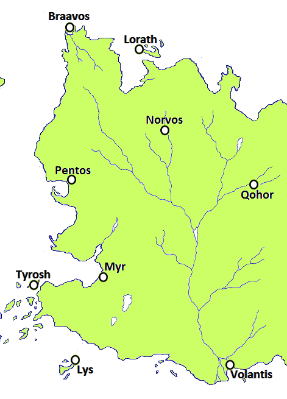

Qohor
The Free City of Qohor is situated on the main continent, in the vast Forest of Qohor. It is known for its fine tapestries and its smiths, who have the rare ability to reforge Valyrian steel, even directly infusing the metal with a variety of different colors. The Black Goat is a prominent god in the city. Qohor’s city guard has been comprised solely of Unsullied eunuch slave soldiers ever since the Battle of the Three Thousand, when 3,000 Unsullied soldiers successfully defended the city against over 25,000 Dothraki horsemen. Guardsmen tie braids of human hair to their spears to commemorate the Dothraki cutting their braids in salute to Qohor’s defenders.
Map on Next page.
